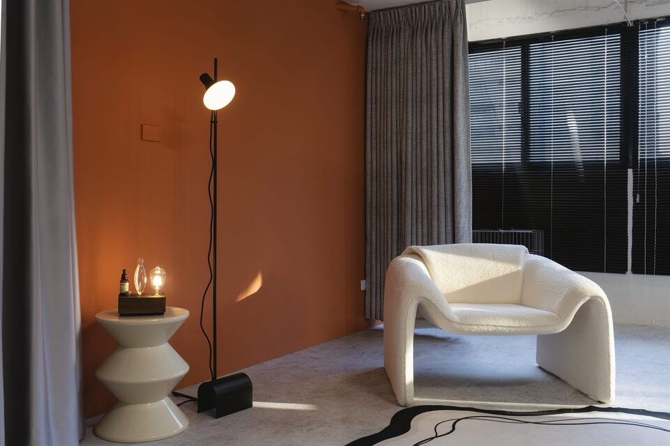

v4.0 共用元件
— 6 components for site-wide form refactor —
摺疊元件
原生 <details>/<summary>，預設首項展開。手機 + 桌機通用。可選 data-single-open 模式（同時只能展開一項）。
克制 Restraint
不加上不屬於你的元素。形象不是裝飾，是減去多餘後的本貌。
整合 Coherence
一個敘事，三種工藝。從衣著到妝髮、妝髮到光影，出自同一場談話。
長線 Longevity
不為單次造型設計，為長期可用的形象資產而服務。每件作品都應禁得起時間。
水平 scroll-snap 元件
手機 swipe / drag，桌機左右箭頭。3 秒後 hint 自動 fade。每 item 寬度 min(82%, 380px) 手機 / 3 等份桌機。



左固定圖 + 右滾動敘事
桌機 ≥1024：左圖固定，右側 step 滾動逐段點亮金色 border。手機：純垂直堆疊，無 sticky。
À Voir 形象定位
從職業角色、個人氣質、身形比例與形象目標出發，建立一套長期可使用的個人視覺語言。
B Room 妝髮造型
鏡頭前的妝髮，承擔三件事：輪廓、氣質、角色感。乾淨、穩定、長時間都不違和的精準調校。
C Photos 形象影像
為長期使用設計的影像——一次拍攝，可沿用至官網、社群、簡報與媒體的品牌資產。
Visual Positioning Blueprint
整合三項服務的旗艦企劃，從深度訪談到應用建議書，建立可承載未來十年的視覺系統。
tab 切換元件
主動探索式切換，一次只顯示 1 個 panel。手機 tab 可橫向 scroll 避免擠不下。
您好，我想諮詢 CHUN.EN 的形象服務。 目前職業角色：[請簡述] 希望解決：[請簡述需求] 預計時程：[本月／本季／未定]
您好，我對 Visual Positioning Blueprint（商業視覺定位企劃）有興趣。 目前職業角色：[請簡述] 應用場景：[官網／社群／簡報／媒體] 希望了解：方案內容與時程
您好，我是現有客戶。 本次需求：[請簡述] 希望時段：[具體日期或範圍]
緩動橫條元件
純 CSS 動畫，無 JS。30 秒一輪 seamless loop。hover 暫停。reduce-motion 自動關閉動畫。
手機 nav drawer
手機 ≤768：頁面右上漢堡 ☰ 啟動，drawer 從底部滑入。桌機 ≥768：trigger 與 drawer 都自動隱藏，不影響桌機 navbar。
測試方式：把瀏覽器視窗縮到 ≤768 寬度，點右上角 ☰ 漢堡按鈕。Drawer 從底部滑入，含完整 nav + CTA。ESC 鍵或點選任何 link 自動關閉。